心をあなたに。

いびつに捻じ曲げられた手。
その首、腹、手首に深く食い込んだ木のツル。
痙攣し、うごめく肢体末端。
人間と呼ぶにはあまりにもおぞましい姿だった。
その首、腹、手首に深く食い込んだ木のツル。
痙攣し、うごめく肢体末端。
人間と呼ぶにはあまりにもおぞましい姿だった。
顔は糸姫に間違いなかった。
消えたと思った糸姫は死月妖花に取り込まれ、その身を操られているのだろうか。
消えたと思った糸姫は死月妖花に取り込まれ、その身を操られているのだろうか。
「わたし は 死月妖 花 と 呼ばれる 者 だ」
糸姫の口から、別人のような声と、たどたどしい言葉が叫ばれる。
糸姫の口から、別人のような声と、たどたどしい言葉が叫ばれる。


同時に、周囲から鞭のようなツルが一斉に這い出してきた。
私たちを威嚇するかのように、ツルが私たちの周囲でうごめいている。
私たちを威嚇するかのように、ツルが私たちの周囲でうごめいている。

「何だよこれ！ 気持ち悪いなあ……！」

「これは死月妖花の菌糸です！」

「ん……夏菜、血をつけて！」

「分かった！」
夏菜ちゃんはもう一度ナイフに血をつけ、パッと周囲に血の飛沫をまき散らす。
すると、菌糸はもがくようにのた打ち回り、その姿を地中や木の中に隠してしまった。
チガ姉の言った通り、夏菜ちゃんの血は死月妖花に対して強力に作用するようだ。
しかし糸姫の言葉を信じるなら、この山々に咲き乱れる桜をすべて枯らすには、夏菜ちゃん1人の血では足りないと言う。
しかし糸姫の言葉を信じるなら、この山々に咲き乱れる桜をすべて枯らすには、夏菜ちゃん1人の血では足りないと言う。
「わ たしは 死月 妖花と 呼ば れる 者だ 」
「何だよお前！ それしか言えないのか！」
と、隠れていた菌糸が次々と春花に向かって伸びていく。
「何だよお前！ それしか言えないのか！」
と、隠れていた菌糸が次々と春花に向かって伸びていく。
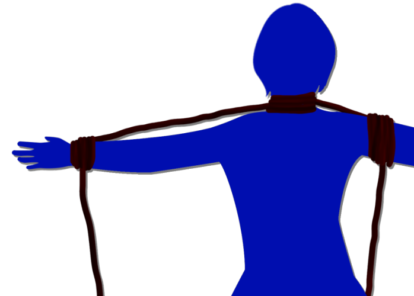
「うわ！ 離せ……！」
菌糸が春花の首と手首、足首に巻きつき、完全に動きを封じる。
菌糸が春花の首と手首、足首に巻きつき、完全に動きを封じる。
「わた しは死 月妖 花と呼ばれ る者 だ」
そして1本の菌糸が、地面に落ちていた注射器を拾い上げる。
「やめろ！ 離せ！」
「わ たしは死月 妖 花と 呼ば れ る者だ」
そして1本の菌糸が、地面に落ちていた注射器を拾い上げる。
「やめろ！ 離せ！」
「わ たしは死月 妖 花と 呼ば れ る者だ」
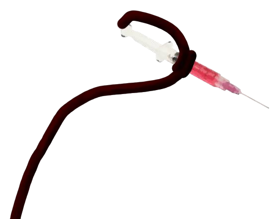
注射器が徐々に春花に近づいていく。
その時、春花の周りを何かが飛び回る。
直後、春花をつかんでいた菌糸がにゅるりと地面へもぐりこんだ。
直後、春花をつかんでいた菌糸がにゅるりと地面へもぐりこんだ。


「春花ちゃん、大丈夫！？」
血の付いたナイフを握った夏菜ちゃんだった。
「夏菜、助かったぜ！」
しかし、夏菜ちゃんは片足をかばうように立っている。
やっぱり、足の怪我が響いているようだ。
血の付いたナイフを握った夏菜ちゃんだった。
「夏菜、助かったぜ！」
しかし、夏菜ちゃんは片足をかばうように立っている。
やっぱり、足の怪我が響いているようだ。

「みんな！ 私から離れないでよ！」
夏菜ちゃんはナイフで自分の腕、足、顔に切り傷をつける。
そこから1筋ずつ、血が流れる。
夏菜ちゃんはナイフで自分の腕、足、顔に切り傷をつける。
そこから1筋ずつ、血が流れる。
「ん……夏菜、気を付けてよ！ 夏菜の血は出血してすぐに使わないと効かないから！」
「じゃあ、みんなに私の血を塗ってもダメなの！？」
「ん……そういうこと。私はそれで失敗したわ」
「じゃあ、みんなに私の血を塗ってもダメなの！？」
「ん……そういうこと。私はそれで失敗したわ」


「夏菜から殺せ夏菜から殺せ夏菜から殺せ」
「古郡なつみ古郡なつみ古郡なつみ古郡なつみ」
次第に周囲の死体の声もその理知を失っていく。
ただ、欲求のまま知性がない生物のように、欲するままに動いている。
「古郡なつみ古郡なつみ古郡なつみ古郡なつみ」
次第に周囲の死体の声もその理知を失っていく。
ただ、欲求のまま知性がない生物のように、欲するままに動いている。
「わ た しは 死月 妖 花 と 呼ば れ る者だ」
「うぐ……！」
突如伸びてきた菌糸が私の身体にまとわりつく。
「なつみ！」
突如伸びてきた菌糸が私の身体にまとわりつく。
「なつみ！」
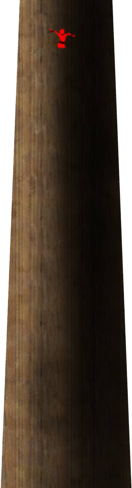
突然私の身体が舞い上がったかと思うと、宙で静止した。
高さ10メートルの位置で私は浮いている。
私の四肢にがっしりと菌糸が巻きつき、空中に持ち上げている。
高さ10メートルの位置で私は浮いている。
私の四肢にがっしりと菌糸が巻きつき、空中に持ち上げている。
「なつみ！ おい夏菜！ 助けられないか！？」
「あれじゃ届かないよ……！」
「あれじゃ届かないよ……！」

「わ たし は死 月妖 花と呼 ばれる者 だ」

糸姫の顔の前に引っ張り込まれる。
「い、糸姫……。目を……覚まして……」
「わ た しは死 月 妖花と呼 ばれ る者 だ」
「糸姫……！ そんなんじゃ、大切な人に会ったら悲しまれるよ！？」
「い、糸姫……。目を……覚まして……」
「わ た しは死 月 妖花と呼 ばれ る者 だ」
「糸姫……！ そんなんじゃ、大切な人に会ったら悲しまれるよ！？」
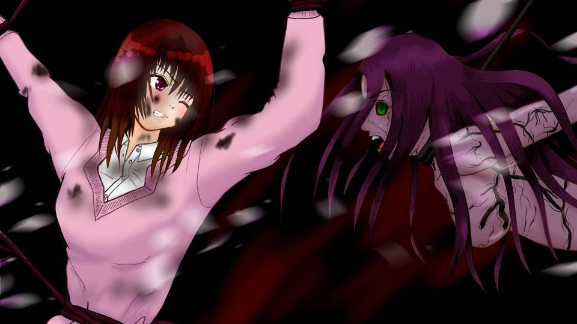
「わ た しは 死月 妖 花――」
「糸姫！」
「わ た ううぐぐぐ……！ 死月 妖 花」
「目を覚まして！」
「わ た なつみ……さん……！」
「あなたはこんなこと、もう望んでないんでしょ！？」
「糸姫！」
「わ た ううぐぐぐ……！ 死月 妖 花」
「目を覚まして！」
「わ た なつみ……さん……！」
「あなたはこんなこと、もう望んでないんでしょ！？」
「わ た しの 望 み は」
もう800年も前だ。
荒田と名づけられた地に根を下ろし、私たちは開墾のために日々働いた。
荒田と名づけられた地に根を下ろし、私たちは開墾のために日々働いた。
あの悲惨な戦から逃れ、何か月もかけて険しい山々を抜け――。
やっと見つけたこの地を何としてでも豊かにしたい。
そのような思いが、私たちを奮い立たせていた。
やっと見つけたこの地を何としてでも豊かにしたい。
そのような思いが、私たちを奮い立たせていた。
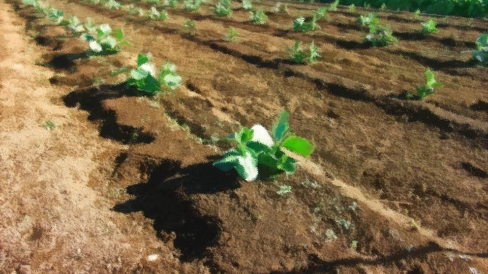
「精が出ますな、皇子！」
従者の1人が皇子様に声をかけるも、ちょっと口をゆがめる。
従者の1人が皇子様に声をかけるも、ちょっと口をゆがめる。
「もう皇子はやめてくれよ、私は身分を捨てたんだ。
名も新村とあらためたのだ」
「まああれですわ、あだ名みたいなもんでしょう！」
「あだ名か……。 糸姫はどう呼びたい？」
「え？ 私、ですか……？ 私は……」
下賤の農民と変わらぬ格好で畑を耕す皇子が不意に話しかける。
「まああれですわ、あだ名みたいなもんでしょう！」
「あだ名か……。 糸姫はどう呼びたい？」
「え？ 私、ですか……？ 私は……」
下賤の農民と変わらぬ格好で畑を耕す皇子が不意に話しかける。
「はっはっは！ いきなり糸姫のような幼子に皇子の呼び方を聞かれたって困るだけですわ！」
「むう、それもそうか……。 すまん糸姫、今のは忘れてくれ」
「あ、あの！ 私は…… 私は、ニイ様って呼びたいです！」
「兄様？ はは、まるで兄妹みたいだな」
「いえ、新村のニイ様です……」
「ああ、なるほどな」
「むう、それもそうか……。 すまん糸姫、今のは忘れてくれ」
「あ、あの！ 私は…… 私は、ニイ様って呼びたいです！」
「兄様？ はは、まるで兄妹みたいだな」
「いえ、新村のニイ様です……」
「ああ、なるほどな」
帝の息子であるニイ様は、ご身分を捨て、この地をどこよりも豊かにしようと日々精を出していた。
自ら農具を持ち、苦しい仕事も汚い作業も、率先してこなされていた。
そんなニイ様はみんなからも信頼を得、日を追うごとにこの地は豊かになっていった。
同じように、私の心も日々豊かになっていくのを感じていた。
自ら農具を持ち、苦しい仕事も汚い作業も、率先してこなされていた。
そんなニイ様はみんなからも信頼を得、日を追うごとにこの地は豊かになっていった。
同じように、私の心も日々豊かになっていくのを感じていた。
当時11歳だった私も、やがて女としての成長を重ねていった。
ニイ様は従者の時のように接して下さるときもあれば、不意に女性として扱って下さることもあった。
それから何年かが過ぎ――。
ニイ様は従者の時のように接して下さるときもあれば、不意に女性として扱って下さることもあった。
それから何年かが過ぎ――。
「糸姫は、将来どうしたい？ ずっとこの地に住むのか？」
「はい！ 私はいつまでも、ニイ様のおそばにいます。 私の家系は代々、帝に仕えていましたから」
「でも、私はもう――」
「いいんです、それで。私がお仕えしたいからお仕えしているんです」
「はい！ 私はいつまでも、ニイ様のおそばにいます。 私の家系は代々、帝に仕えていましたから」
「でも、私はもう――」
「いいんです、それで。私がお仕えしたいからお仕えしているんです」
「糸姫、お前ももう15歳だ。
その……
こんな集落とはいえ、そろそろ女性としての……」
「え？」
「いや、あの……。 だから、しかるべき立ち振る舞いをだな、その……」
「え？」
「いや、あの……。 だから、しかるべき立ち振る舞いをだな、その……」
ニイ様は顔を真っ赤にしてそうおっしゃった。
そうか、私はもう15歳。
結婚したっておかしくない年齢だ。
ニイ様はそうおっしゃりたいのだろうか。
そうか、私はもう15歳。
結婚したっておかしくない年齢だ。
ニイ様はそうおっしゃりたいのだろうか。
でも、結婚って言っても、私のような賤しい身分の者なんて……。
私を除けば、みんな高貴な方ばかり。
私の家系も昔はそれなりのものであったそうだが、祖父母の代からすっかり落ちぶれてしまったとか。
そんな私がいまだにニイ様のおそばにいられるのは、この上ない幸せだ。
私を除けば、みんな高貴な方ばかり。
私の家系も昔はそれなりのものであったそうだが、祖父母の代からすっかり落ちぶれてしまったとか。
そんな私がいまだにニイ様のおそばにいられるのは、この上ない幸せだ。
だけど、もしこの集落を通りかかり、私のような者を見初めてくれる殿方でも現れたら――。
そう考えたら、ニイ様の言うとおり、女性としての立ち振る舞いを……。
でも、私を見初めていただきたいのは――。
そう考えたら、ニイ様の言うとおり、女性としての立ち振る舞いを……。
でも、私を見初めていただきたいのは――。
「糸姫、大丈夫か？ 顔が赤いぞ？」
「え！！？？」
ニイ様の何気ない一言で、異常に大きな声を出してしまった私。
どうして顔が赤いのか。
どうしてこんなにもあわててしまうのか。
どうして…… こんなに胸が鼓動を打つのか。
「え！！？？」
ニイ様の何気ない一言で、異常に大きな声を出してしまった私。
どうして顔が赤いのか。
どうしてこんなにもあわててしまうのか。
どうして…… こんなに胸が鼓動を打つのか。
――私はそれからというもの、できる限り女性らしく振る舞うよう心掛けた。
記憶の中にある家族や女官たちの仕草を思い出し、それを真似てみた。
記憶の中にある家族や女官たちの仕草を思い出し、それを真似てみた。
「どうした糸姫、足でも怪我したのか？」
「あ、いえ、そう言うわけじゃ……」
女性らしい歩き方を意識してみたら、ニイ様と年齢の近い綱宗様にそのように言われてしまった。
「あ、いえ、そう言うわけじゃ……」
女性らしい歩き方を意識してみたら、ニイ様と年齢の近い綱宗様にそのように言われてしまった。
やっぱり、上手にできないな……。
と、綱宗様が去った後、誰かが私の肩に手を置く。
と、綱宗様が去った後、誰かが私の肩に手を置く。
「糸姫、あまり無理しなくていいぞ。ちょっとずつやればいいんだ」
ニイ様はそう言い残して、綱宗様の方へ歩いていった。
ニイ様は理解してくれている。
私が何を考えているか、どうしようとしているのか。
でも…… だけど…… 私のこの胸の鼓動までは知らないだろう。
ニイ様は理解してくれている。
私が何を考えているか、どうしようとしているのか。
でも…… だけど…… 私のこの胸の鼓動までは知らないだろう。
いくら身分を捨てたとは言え、私とニイ様が……。
それでも、抑えきれないものがある。
私は―― ニイ様が――。
それでも、抑えきれないものがある。
私は―― ニイ様が――。
――しかし、突然その日がやってきた。
あれは、まだ春を迎えたばかりの、肌寒い日だった。
あれは、まだ春を迎えたばかりの、肌寒い日だった。
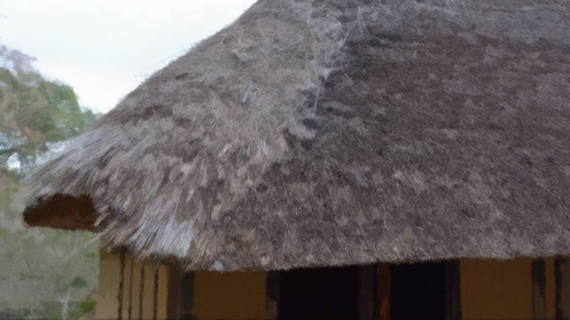
「明日、ここを発つ！？」
「うん……そのつもりだ」
綱宗様に呼ばれてこの場所へ来たのだが……。
ニイ様と綱宗様の会話が、集落の外れの小屋から聞こえてきたのだ。
「うん……そのつもりだ」
綱宗様に呼ばれてこの場所へ来たのだが……。
ニイ様と綱宗様の会話が、集落の外れの小屋から聞こえてきたのだ。
「もう、この地は充分に豊かになった。
だから、ここから明日、出て行こうと思う」
「意味が分からない……。どういうことだ？」
「私は皇子という身分であったが、本当に世間のことを知らなすぎた。 この国には、まだまだ荒れた地がたくさんある。 そして、そこに住む人々もいる。 痩せた地で飢えている者があれば、助けになりたい」
「意味が分からない……。どういうことだ？」
「私は皇子という身分であったが、本当に世間のことを知らなすぎた。 この国には、まだまだ荒れた地がたくさんある。 そして、そこに住む人々もいる。 痩せた地で飢えている者があれば、助けになりたい」
「この地で得た知識や技術を生かして、他の地の人々を豊かにしたいと？」
「そうだ。おそらく、もうすぐ聖守の時代は終わるだろう。 それまでに、少しでもこの国を豊かにする 礎 を築きたい」
「そうだ。おそらく、もうすぐ聖守の時代は終わるだろう。 それまでに、少しでもこの国を豊かにする 礎 を築きたい」
「正直に言う。この地はお前が去っても大丈夫だろう。
お前のおかげで、皆生きていくのに十分すぎるほどの知識も技術も得ることができた。
でも……」
「でも……
糸姫はどうするつもりだ？」
「糸姫……？」
「気づいていないなんて言わせないぞ。糸姫のお前を見る目、分かっているだろ？」
「…………」
「そうか、お前がここを出て行く本当の理由は……」
「糸姫……？」
「気づいていないなんて言わせないぞ。糸姫のお前を見る目、分かっているだろ？」
「…………」
「そうか、お前がここを出て行く本当の理由は……」
「いくら身分を捨てたとは言え、もし私の正体が公になれば、この集落もただでは済まない。
しかし糸姫が知れば、私についていくと言うだろう。
だから私は明日、ひっそりとここを去る」
「…………」
「私の正体が知れたら、糸姫にだって何が起こるか分からない。 だから、私は――」
「…………」
「私の正体が知れたら、糸姫にだって何が起こるか分からない。 だから、私は――」
「お前の気持ちはどうなんだ？」
「え？」
「お前の周りのことは置いておけ。お前は糸姫をどう思うんだ？」
「それは……」
「え？」
「お前の周りのことは置いておけ。お前は糸姫をどう思うんだ？」
「それは……」
小屋近くの木に背をつけ、両手で口を覆う。
ドキドキして、声が出てしまいそうだった。
聞くのが怖い。
怖いけど―― 耳ではなく、口を覆う。
その場でじっと、ニイ様のお言葉を待つ。
ドキドキして、声が出てしまいそうだった。
聞くのが怖い。
怖いけど―― 耳ではなく、口を覆う。
その場でじっと、ニイ様のお言葉を待つ。
「糸姫はあどけなさが残るが、美しい女性になるだろう。
あの美しさだけでも、やんごとなき貴族たちに見初められるはずだ」
「お前……！」
「じゃあ、私は仕事に戻る」
「待て！ 俺はそんなことを聞きたいんじゃない！ お前の糸姫に対する気持ちだ！」
「お前……！」
「じゃあ、私は仕事に戻る」
「待て！ 俺はそんなことを聞きたいんじゃない！ お前の糸姫に対する気持ちだ！」
「私は身分を捨てたんだ！ そんな私が、今さら――」
「だからそんなことは聞いてないって言っているだろ！」
「だからそんなことは聞いてないって言っているだろ！」
しばし、一帯が静寂に包まれる。
春の新芽の間を縫って、小鳥たちの声が聞こえる。
この沈黙が、とても長い。
私の鼓動と一緒に、口を覆う手の隙間から白い息が上がる。
冷たい空気が喉の奥を冷やすも、身体の中がとても熱い。
熱くて熱くて――苦しい。
春の新芽の間を縫って、小鳥たちの声が聞こえる。
この沈黙が、とても長い。
私の鼓動と一緒に、口を覆う手の隙間から白い息が上がる。
冷たい空気が喉の奥を冷やすも、身体の中がとても熱い。
熱くて熱くて――苦しい。
「もし……
こんな境遇でなければ……
私だって糸姫を……」
「そうか。本当に糸姫には言わないのか？」
「ああ、言わない。私は明日の朝、姿を消している。それだけだ」
「ずるいやつだ……」
「そうか。本当に糸姫には言わないのか？」
「ああ、言わない。私は明日の朝、姿を消している。それだけだ」
「ずるいやつだ……」
――2人は私に気づくことなく、小屋を後にした。
でも、私はそのまま立つことも動くこともできなかった。
鼓動が収まっても、呼吸が収まっても、口を覆う手を動かすことを忘れていた。
ようやく春が来たというのに、私は冬のつららのように、硬く身を凍らせていた。
でも、私はそのまま立つことも動くこともできなかった。
鼓動が収まっても、呼吸が収まっても、口を覆う手を動かすことを忘れていた。
ようやく春が来たというのに、私は冬のつららのように、硬く身を凍らせていた。
――夜明け前。
誰かが家の戸を開ける。
誰かが家の戸を開ける。
「じゃあ、あとは頼んだぞ」
「………… 達者でな」
ニイ様と綱宗様の声。
本当に、出て行かれるおつもりらしい。
「………… 達者でな」
ニイ様と綱宗様の声。
本当に、出て行かれるおつもりらしい。
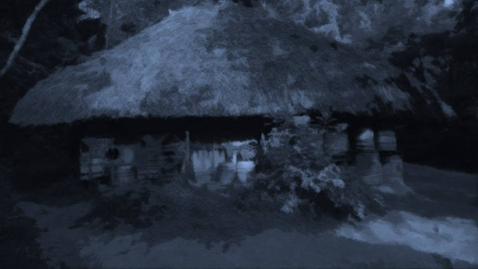
私もこっそりと家を出て、あらかじめ用意していた荷物を持つ。
みんな同じ家で暮らしているから、誰も起こさないように出るのはなかなか大変なことだった。
厠 は外だから、最悪それでごまかすことはできる。
そのために、荷物はあらかじめ外に置いておいたのだ。
みんな同じ家で暮らしているから、誰も起こさないように出るのはなかなか大変なことだった。
厠 は外だから、最悪それでごまかすことはできる。
そのために、荷物はあらかじめ外に置いておいたのだ。
まだ夜も明けぬ 曙 前。
寒の戻りと言うのだろうか、真冬のような寒さだ。
1度、はーっと息を吐くと、炊き立ての釜のような白い息が立ち上った。
寒の戻りと言うのだろうか、真冬のような寒さだ。
1度、はーっと息を吐くと、炊き立ての釜のような白い息が立ち上った。
この集落から外へ出る道は1つしかない。
私はその道を走り、ニイ様の後を追う。
私はその道を走り、ニイ様の後を追う。
春とは思えない凍てつく空気。水たまりに薄氷が張っている。
両腕を抱え、身を縮こめ、小走りで後を追う。
両腕を抱え、身を縮こめ、小走りで後を追う。
しかし、こうやってニイ様を追いかけているものの、私を連れて行って下さるだろうか。
私はニイ様を説得できるほど賢くはないし、有効な対策もついに思い浮かばなかった。
私はニイ様を説得できるほど賢くはないし、有効な対策もついに思い浮かばなかった。
説得しようだなんて思っていない。
ニイ様のお気持ちを、わずかばかりでも知ることができたから。
だから、必ずニイ様は私を一緒に連れて行って下さる。
ニイ様のお気持ちを、わずかばかりでも知ることができたから。
だから、必ずニイ様は私を一緒に連れて行って下さる。
だって、私にはそれ以外の生き方なんてできない。
ニイ様なしで生きていくなんて。
私は生まれた時から、ニイ様にお仕えするために生きてきたのだ。
ニイ様なしで生きていくなんて。
私は生まれた時から、ニイ様にお仕えするために生きてきたのだ。
「はあ……はあ……」
もう追いついてもいい頃だ。
どうして追いつけないのだろうか。
ニイ様も走ったか、別の道を通ったか。
私のように後を追う者が来る可能性を考えれば、そのようにすることもあり得る。
もう追いついてもいい頃だ。
どうして追いつけないのだろうか。
ニイ様も走ったか、別の道を通ったか。
私のように後を追う者が来る可能性を考えれば、そのようにすることもあり得る。
「ニイ様……
嫌です……！」
このまま、もう2度とニイ様に会えない……？
そんなの…… そんなの絶対に嫌だ！
絶対に、絶対に嫌だ！
「ニイ様！ ニイ様、どこですか！？」
私の頬を、凍った風で冷えた涙が伝う。
小さな嗚咽と一緒に、大きな白い息が吐き出される。
このまま、もう2度とニイ様に会えない……？
そんなの…… そんなの絶対に嫌だ！
絶対に、絶対に嫌だ！
「ニイ様！ ニイ様、どこですか！？」
私の頬を、凍った風で冷えた涙が伝う。
小さな嗚咽と一緒に、大きな白い息が吐き出される。
と――
誰かが私の肩に手を置く。
いつか私が女性の仕草を真似始めた時のように、誰かが優しく、手を置いてくれる。
この手は……。
いつか私が女性の仕草を真似始めた時のように、誰かが優しく、手を置いてくれる。
この手は……。
「ニイ様……」
「やっぱり、ついてきたのか」
「…………」
いなくなったと思ったニイ様の顔と手が、そこにあった。
あまりの嬉しさと驚きと―― そしてほんの少しの申し訳なさで、それ以上声が出なかった。
「やっぱり、ついてきたのか」
「…………」
いなくなったと思ったニイ様の顔と手が、そこにあった。
あまりの嬉しさと驚きと―― そしてほんの少しの申し訳なさで、それ以上声が出なかった。
「わ、私……！ あの……！」
やっと出た声が、それだけだった。
話し慣れたはずのニイ様に、それしか言えなかった。
「糸姫、お前が小屋で話を聞いていたことは気づいてた」
「え？」
「綱宗がお前に聞かせるために、わざと仕組んだようだ……」
やっと出た声が、それだけだった。
話し慣れたはずのニイ様に、それしか言えなかった。
「糸姫、お前が小屋で話を聞いていたことは気づいてた」
「え？」
「綱宗がお前に聞かせるために、わざと仕組んだようだ……」
「私……
ニイ様と……」
「ダメだ！ そんなの、絶対にダメだ！ 私は身分を捨てたばかりか、見つかったら反逆者として処刑される身だ。 私といることがどれほど危険な事か分かるだろう」
「ダメだ！ そんなの、絶対にダメだ！ 私は身分を捨てたばかりか、見つかったら反逆者として処刑される身だ。 私といることがどれほど危険な事か分かるだろう」
「私は……
代々、帝にお仕えする家系です。
賤しい身分でありながら、帝にお仕えすることを許された稀有な家系――
それだけが私の誇りです。
その尊厳を奪われては……」
「私はその尊厳も捨てたのだ。 私が捨てた時点で、お前も――」
「私はその尊厳も捨てたのだ。 私が捨てた時点で、お前も――」
「でも私は、その家系である以前に1人の女です！
身分を捨てても、
家を捨てても、
家族を捨てても……
女であることを捨てることはできません」
「…………」
「…………」
私の生意気な反論に呆れたのか――
それとも真摯に受け止めて下さったのか。
ニイ様はまだ私を子ども扱いするだろうか。
それとも、いつかのように、女として扱ってくれるだろうか。
ニイ様はまだ私を子ども扱いするだろうか。
それとも、いつかのように、女として扱ってくれるだろうか。
「糸姫、やっぱりお前を連れて行くことはできない。
これは、お前が足手まといだからではない。お前の身を案じてこそなのだ。
お前は……やはり、私にとって大切な女子なのだ」
「じゃあ…… もう、本当にこれで…… お別れなんですか？」
と、ニイ様が私の冷えた髪に手を添える。
直接ニイ様の手が肌に触れずとも、その温かさが伝わってくる。
「じゃあ…… もう、本当にこれで…… お別れなんですか？」
と、ニイ様が私の冷えた髪に手を添える。
直接ニイ様の手が肌に触れずとも、その温かさが伝わってくる。
「お別れじゃない。生きていれば、また必ず……」
「…………」
「いや、これではダメだな……。 1つだけ約束する。覚えておいてほしい」
「約束……？」
「…………」
「いや、これではダメだな……。 1つだけ約束する。覚えておいてほしい」
「約束……？」
「もうすぐ聖守の世は終わるはず。
それなら、私も安全に外界を出歩くことができる。
あと……
10年以内にその時が来るだろう」
「10年……」
「10年とは、長い時間だ。 この時勢、10年もあれば世も劇的に変化する。 この荒田もまた大きく変わるだろう。 もし、それでも…… 糸姫の心が変わらないのであれば――」
「10年……」
「10年とは、長い時間だ。 この時勢、10年もあれば世も劇的に変化する。 この荒田もまた大きく変わるだろう。 もし、それでも…… 糸姫の心が変わらないのであれば――」
「私はまたここへ……
糸を迎えに来る」
今までで1番鼓動が高鳴った時だった。
この凍える風の中、私の周囲だけ、真夏の囲炉裏のような暖かさだった。
手足がほてり、顔が紅潮し、呼吸が早まる。
10年…… 10年待てば……。
今までで1番鼓動が高鳴った時だった。
この凍える風の中、私の周囲だけ、真夏の囲炉裏のような暖かさだった。
手足がほてり、顔が紅潮し、呼吸が早まる。
10年…… 10年待てば……。
「10年、待ってくれるか？」
「ずっと…… いつまでもお待ち申し上げております」
私がそのように返事をすると、ニイ様は懐から細長いものを取り出した。
「ずっと…… いつまでもお待ち申し上げております」
私がそのように返事をすると、ニイ様は懐から細長いものを取り出した。
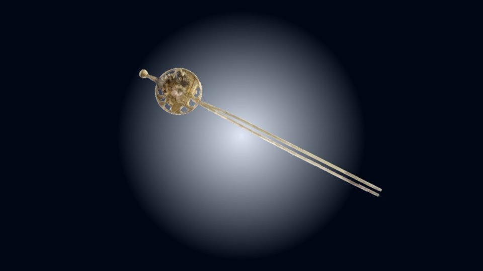
かんざしだ。
「これは、私が彫ったものだ。
本当は、綱宗から渡してもらおうと思っていたが、あまりにも未練がましい気がして、結局……。
これを私だと思って、持っていてくれ」
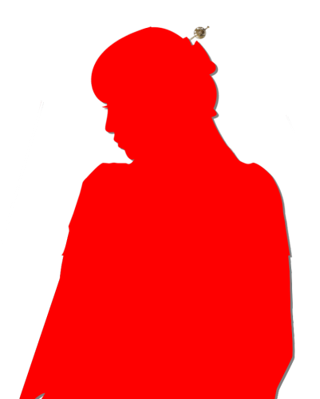
ニイ様は私の髪をそっとかき上げ、かんざしを挿して下さった。
時折当たるニイ様の手は、紅潮した私の頬よりも温かかった。
でも、嬉しいはずなのに―― どうしてだろう。
また、冷たい涙が頬を伝う。
でも、嬉しいはずなのに―― どうしてだろう。
また、冷たい涙が頬を伝う。
最後に私の髪と顔を見ると、ニイ様は何も言わずにご自分の道をお進みになった。
たったさっきまで、ニイ様はここにいた。
ここにいて、私にかんざしを下さった。
10年…… たった10年待てば――。
たったさっきまで、ニイ様はここにいた。
ここにいて、私にかんざしを下さった。
10年…… たった10年待てば――。
やがて空が白み始め、新しい春の太陽が顔を見せ始めた。
ニイ様が去ってからも、私はずっとその場に立ち尽くしていた。
凍てつく空気が徐々に温かみを増し、いずれ訪れる10年後の息吹を感じさせてくれる。
ニイ様が去ってからも、私はずっとその場に立ち尽くしていた。
凍てつく空気が徐々に温かみを増し、いずれ訪れる10年後の息吹を感じさせてくれる。
ニイ様は……
卑怯者です。
ご自分の決心と志がありながら、私にもお心を残すなんて。
連れていって下さるか、今ここで振って下さればよかったのに。
ずるいです。卑怯です。
私を10年もここで待たせるなんて……ひどいお方。
ご自分の決心と志がありながら、私にもお心を残すなんて。
連れていって下さるか、今ここで振って下さればよかったのに。
ずるいです。卑怯です。
私を10年もここで待たせるなんて……ひどいお方。
そんなこと言われたら――
待つに決まっているじゃないですか。
待つしかないじゃないですか。
ひどい人。 ずるい人。 卑怯な人。
そんな人に焦がれる私は―― バカな女ですよね。
10年でも、100年でも、1000年でも、お待ち申し上げております。
待つしかないじゃないですか。
ひどい人。 ずるい人。 卑怯な人。
そんな人に焦がれる私は―― バカな女ですよね。
10年でも、100年でも、1000年でも、お待ち申し上げております。
朝日で伸びる長い影を追いながら、集落へ歩みを進める。
本当ならニイ様についていきたかった。
でも、将来を約束して下さったのであれば、私はそれだけで10年生きていける。
それまでに、ニイ様がおっしゃっていた女性としての立ち振る舞いを身につけないと。
誰よりも、ニイ様に相応しい女にならないと。
本当ならニイ様についていきたかった。
でも、将来を約束して下さったのであれば、私はそれだけで10年生きていける。
それまでに、ニイ様がおっしゃっていた女性としての立ち振る舞いを身につけないと。
誰よりも、ニイ様に相応しい女にならないと。
ニイ様、私……
今、とても幸せです。
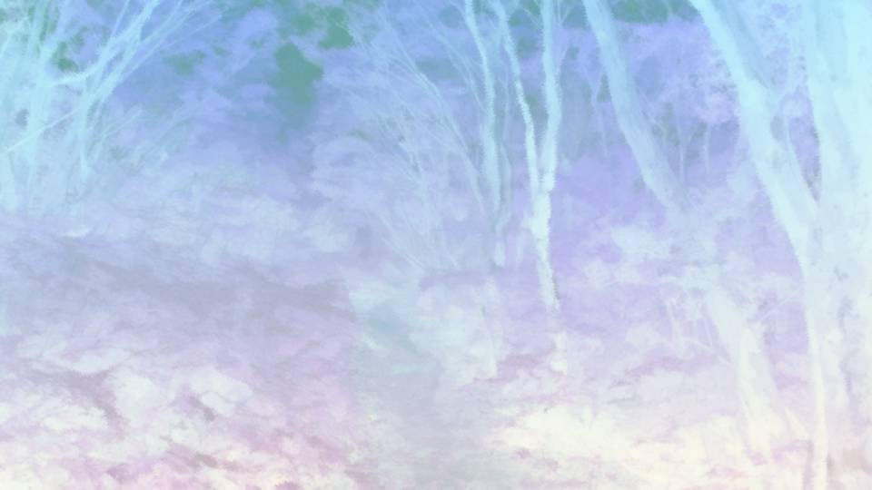
不意に、おかしな気配を感じた。
この私の背丈ほどもある笹藪の中に、何かがいる。
それも、たくさんの気配――。
私はその異様な空気に足を止めてしまった。
この私の背丈ほどもある笹藪の中に、何かがいる。
それも、たくさんの気配――。
私はその異様な空気に足を止めてしまった。
「いたぞー！」
「ほほー！ やっと獲物だあ！」
そこに飛び出してきたのは、全身真っ黒に汚れた男たちだった。
私はあっという間に、7人の男に囲まれてしまった。
「ほほー！ やっと獲物だあ！」
そこに飛び出してきたのは、全身真っ黒に汚れた男たちだった。
私はあっという間に、7人の男に囲まれてしまった。
「いやあ！ 一時はどうなるかと思ったけど、やっと獲物だあ！」
「こんなところで獲物が見つかるなんて、棚から何とか、だな！」
「ははははは！」
「ははははは！」
間違いない、山賊だ！
どうやら、この地に迷い込み、通りすがりの獲物を待っていたようだ。
「こんなところで獲物が見つかるなんて、棚から何とか、だな！」
「ははははは！」
「ははははは！」
間違いない、山賊だ！
どうやら、この地に迷い込み、通りすがりの獲物を待っていたようだ。
「おい女！ 荷物全部置いて行きな！ 命だけは助けてやるぜ！」
「ん？ んんー！？ なかなかいい女じゃないのー！？」
「まだガキだろ……」
と、山賊の1人が私の腕をつかむ。
「ん？ んんー！？ なかなかいい女じゃないのー！？」
「まだガキだろ……」
と、山賊の1人が私の腕をつかむ。
「いやいや見ろよ！
ほれ、もう女の肌してるぞ！ ここも！ ここも！」
「やめて！ 離して！」
「お前らがガキって言うなら、俺がいただくぞ！」
「待て待て！ いらないとは言ってないだろ！」
「やめて！ 離して！」
「お前らがガキって言うなら、俺がいただくぞ！」
「待て待て！ いらないとは言ってないだろ！」
何とか手を振りほどくも、色めき立つ目つきで、じりじりと歩み寄っていく山賊たち。
私は荷物を投げ捨て、一目散に逃げ出す。
私は荷物を投げ捨て、一目散に逃げ出す。
「おー！ 追いかけっこだー！」
「待てー待てー！」
このまま集落に逃げ込んでしまうと、山賊たちに襲撃されてしまう。
私のわがままでここまで来たのだから、集落に寄せ付けるわけにはいかない。
「待てー待てー！」
このまま集落に逃げ込んでしまうと、山賊たちに襲撃されてしまう。
私のわがままでここまで来たのだから、集落に寄せ付けるわけにはいかない。
しかも山賊たちは本気で私を追って来ない。
私の走る速さを合わせて、この追いかけっことやらを楽しんでいる。
私が疲れ果て、座り込むのを狙っているのだろうか。
やだ……！ もう一度ニイ様に会うまで、こんなところで女を汚すわけにはいかない……！
私の走る速さを合わせて、この追いかけっことやらを楽しんでいる。
私が疲れ果て、座り込むのを狙っているのだろうか。
やだ……！ もう一度ニイ様に会うまで、こんなところで女を汚すわけにはいかない……！

――やがてたどり着いたのは、広場のそばの崖だった。
崖は城ほどの高さがあり、とても下りられるものではない。
下からは、渓流の音が聞こえる。
崖は城ほどの高さがあり、とても下りられるものではない。
下からは、渓流の音が聞こえる。
「はいはいお嬢ちゃん、大人しくしましょうね」
私の進路は、この崖で完全に断たれてしまった。
いやだ、絶対にいやだ……！
ニイ様、助けて……！
ニイ様……！
私の進路は、この崖で完全に断たれてしまった。
いやだ、絶対にいやだ……！
ニイ様、助けて……！
ニイ様……！
私はどうしても観念することができず、足を少しずつ下げていく。
「お嬢ちゃん、ほら危ないからこっちにおいでよ」
「僕たち、ほんとはとっても優しいんだから！」
いや…… いや……！
叫ぶこともできず、泣くこともできず――。
ただ、心の中でニイ様を呼び続けた。
助けて―― 助けて。
「お嬢ちゃん、ほら危ないからこっちにおいでよ」
「僕たち、ほんとはとっても優しいんだから！」
いや…… いや……！
叫ぶこともできず、泣くこともできず――。
ただ、心の中でニイ様を呼び続けた。
助けて―― 助けて。
足にずるりという土の振動が伝わる。
足に感じていたはずの大地の感触が突如なくなる。
同時に、平衡感覚も失う。
私は足場を失い――。
足に感じていたはずの大地の感触が突如なくなる。
同時に、平衡感覚も失う。
私は足場を失い――。

足を滑らせ、崖から落ちたと思った時には、既に私の身体は宙を舞っていた。
舞っているはずなのに、私の身は意に反して、加速しながら下へ落ちていく。
嘘…… 嘘でしょ……？
私、城よりも高い場所から落ちているの？
そんなの、助かるわけ……。
舞っているはずなのに、私の身は意に反して、加速しながら下へ落ちていく。
嘘…… 嘘でしょ……？
私、城よりも高い場所から落ちているの？
そんなの、助かるわけ……。
ふわふわと宙を舞う感覚の次に訪れたのは、必要以上の力で大地に吸い込まれる息苦しさだった。
大きな落下音と同時に、私の全身は大地に貼り付けられる。
大きな落下音と同時に、私の全身は大地に貼り付けられる。
落ちた……
落ちてしまった。
私はこのまま、死ぬの？
ニイ様と再会する前に、このまま死ぬの……？
やだよ…… ニイ様に会う前に死ぬなんて、絶対に嫌だ。
私はこのまま、死ぬの？
ニイ様と再会する前に、このまま死ぬの……？
やだよ…… ニイ様に会う前に死ぬなんて、絶対に嫌だ。
「うわあ……こりゃきついな……」
「さすがにこんな女、いらないわ……」
下りてきた山賊たちが、私の身体を好き勝手に評価し始める。
ああ、そうなんだ。
やっぱりもう、助からない身体になっちゃったんだ。
「さすがにこんな女、いらないわ……」
下りてきた山賊たちが、私の身体を好き勝手に評価し始める。
ああ、そうなんだ。
やっぱりもう、助からない身体になっちゃったんだ。
「金目のもの、持ってないのか？」
「折れたかんざしだけだ。とんだ骨折り損だったな、行こうぜ」
遠ざかっていく人の気配。
やがて、私の聴覚は渓流の音だけを捉え始めた。
「折れたかんざしだけだ。とんだ骨折り損だったな、行こうぜ」
遠ざかっていく人の気配。
やがて、私の聴覚は渓流の音だけを捉え始めた。
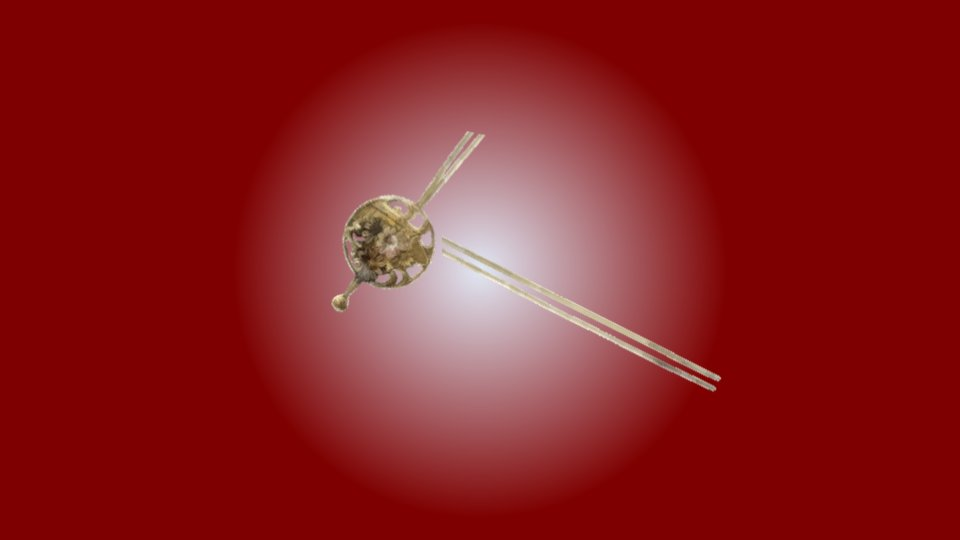
かんざしが折れた……。
ニイ様の代わりだったかんざしが……。
やだ…… 死にたくない…… このまま死にたくない…… 死にたくない……。
死にたくないよ…… ニイ様に会うまで、死ねないよ……。
ニイ様の代わりだったかんざしが……。
やだ…… 死にたくない…… このまま死にたくない…… 死にたくない……。
死にたくないよ…… ニイ様に会うまで、死ねないよ……。
意識も視覚も聴覚も鈍り始め――
私の鼓動も、その動きを止めようとしていた。
やだ…… 誰か、お願い……。
何でもするから……。
ニイ様に会うまで……。
やだ…… 誰か、お願い……。
何でもするから……。
ニイ様に会うまで……。
私の身体に、何かが絡みつく感覚。
失われたはずの触覚が、全身を覆う何かを知覚し始める。
何だろう、これ。
死ぬと、こんな感覚になるのかな。
失われたはずの触覚が、全身を覆う何かを知覚し始める。
何だろう、これ。
死ぬと、こんな感覚になるのかな。
あ……何？ これ……。
私の中に何かが入り込んでくる。
誰？ 誰なの？ あなたは。
私をどうしようと言うの？
もしかして…… 助けてくれるの？
私の願い、聞いてくれるの？
私の中に何かが入り込んでくる。
誰？ 誰なの？ あなたは。
私をどうしようと言うの？
もしかして…… 助けてくれるの？
私の願い、聞いてくれるの？
ああ、やっぱりそうだ。
私の願いを聞いてくれるんだ。
ん？ 何？
あなたの願いも聞いてほしい？
うん、いいよ。
願いは何？
私の願いを聞いてくれるんだ。
ん？ 何？
あなたの願いも聞いてほしい？
うん、いいよ。
願いは何？
大きくなりたい？
それだけ？
静かに暮らしたい？
うん、いいよ。
どうしたらいい？
それだけ？
静かに暮らしたい？
うん、いいよ。
どうしたらいい？
死体が欲しい？
そこからあなたの分身が生えてくるんだね。
そうやって、あなたは成長していくんだね。
一緒に獣の死体を探そうか。
でも、あなたは私に何をしてくれるの？
そこからあなたの分身が生えてくるんだね。
そうやって、あなたは成長していくんだね。
一緒に獣の死体を探そうか。
でも、あなたは私に何をしてくれるの？
ニイ様を探してくれるの？
本当に？
胞子？
ニイ様に胞子をつけたから、居場所が分かる？
胞子が何なのか分からないけど……ありがとう。
何でも協力するよ。
本当に？
胞子？
ニイ様に胞子をつけたから、居場所が分かる？
胞子が何なのか分からないけど……ありがとう。
何でも協力するよ。
――ニイ様が死んだ？
元木という地で、平氏の残党に襲われて？
そっか……10年経つ前に、結局死んじゃったんだ……。
ねえ、だったら、元木の地に行こうよ。
あなたがその腕を元木の地まで伸ばせば、ニイ様の御遺体に触れられるよね？
そしたら、ニイ様をよみがえらせられるよね？
元木という地で、平氏の残党に襲われて？
そっか……10年経つ前に、結局死んじゃったんだ……。
ねえ、だったら、元木の地に行こうよ。
あなたがその腕を元木の地まで伸ばせば、ニイ様の御遺体に触れられるよね？
そしたら、ニイ様をよみがえらせられるよね？
元木の地まで腕を伸ばすのに、時間がかかる？
うん、いいよ。
10年でも――20年でも―― 100年でも――1000年でも待つよ。
うん、いいよ。
10年でも――20年でも―― 100年でも――1000年でも待つよ。
私は何をすればいいの？
殺さなきゃいけない？
人を殺すの？
ダメだよ人を殺したら。
殺さなきゃいけない？
人を殺すの？
ダメだよ人を殺したら。
人間の知性がもっとほしい？
だから人間を殺すの？
でも殺したらダメ――。
だから人間を殺すの？
でも殺したらダメ――。
…………
…………
やだ、やだよ！ 見捨てないで！
ニイ様に会うまで死ぬわけには……！
………… 分かった……。
でも……できるだけ殺したくないよ……。
ニイ様に会うまで死ぬわけには……！
………… 分かった……。
でも……できるだけ殺したくないよ……。
あなたは私の願いをかなえ、不老不死の身体をくれる。
私はあなたに、知性を与える。
あなたが早く大きく成長できるように、私があなたの知性になる。
さあ、早く大きくなってね。
私はあなたに、知性を与える。
あなたが早く大きく成長できるように、私があなたの知性になる。
さあ、早く大きくなってね。
そして――
早く――
ニイ様に会わせてちょうだい。
Read ✓ Next in this arc →